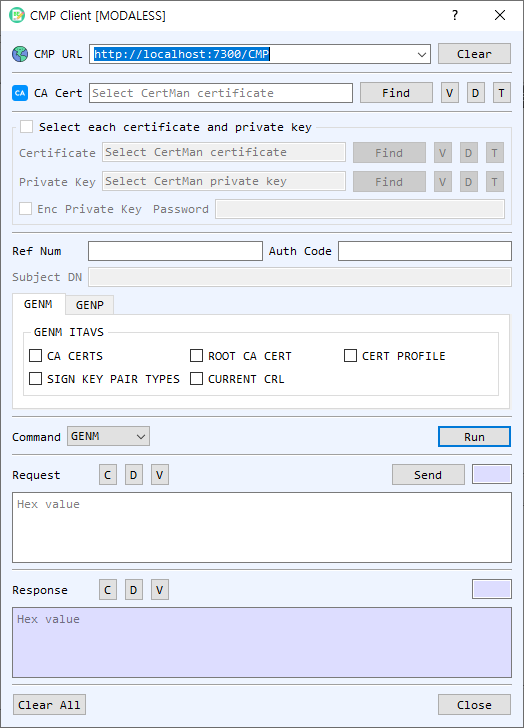

CMP Client Dialog Guide
The CMP Client creates and sends Certificate Management Protocol requests for certificate enrollment and management. It supports request types including initial request, certification request, key update, revocation, and general messages.

Figure 1. CMP Client dialog with GENM selected. The enabled credential and request fields depend on the selected command.
Screen Areas
- CMP URL — Enter or select the CMP server endpoint. Clear clears the URL history/input.
- CA Cert — Select the CA certificate used by CMP. Find, V, D, and T browse, view, decode, or identify the certificate.
- Select each certificate and private key — Enable this group to select a client certificate and private key from files; otherwise use CertMan. Enable Enc Private Key and enter its password if the key file is encrypted.
- Ref Num / Auth Code — Enter the reference number and authorization code supplied by the CA for enrollment commands that use the out-of-band credentials.
- Subject DN — Enter the requested subject distinguished name for IR or CR requests.
- GENM / GENP tabs — GENM exposes General Message Information Type and Value (ITAV) options such as CA CERTS, ROOT CA CERT, CERT PROFILE, CURRENT CRL, and SIGN KEY PAIR TYPES. GENP provides general message parameters where available.
- Command / Run — Select the CMP operation and choose Run to create the request. Supported commands are GENM, IR, CR, P10CR, SignGENM, KUR, and RR.
- Request — Displays the encoded CMP request. Send transmits the request to the CMP URL. C, D, and V clear, decode, or view the request.
- Response — Displays the received CMP response. C, D, and V clear, decode, or view it.
- Clear All / Close — Clear the dialog or close the client.
Create and Send a CMP Request
- Enter the CMP server URL and select the CA certificate.
- Choose a command. For IR or CR, enter the requested Subject DN. For GENM or SignGENM, select the required ITAV options. Enrollment commands may require Ref Num and Auth Code.
- For commands requiring an existing identity, enable Select each certificate and private key and choose the matching client certificate/key, or select them from CertMan.
- Select Run to create the request. Review it with V or D if needed.
- Select Send and review the response. Issued certificate/private-key material may be offered for saving to CertMan.
Command Reference
| Command | Purpose |
|---|---|
GENM |
Request general information from the CA using selected ITAV values. |
IR |
Initial certificate request. |
CR |
Request certificate issuance for a subject. |
P10CR |
Submit a PKCS #10 certificate request. |
SignGENM |
Send a signed general message using client credentials. |
KUR |
Request a key update using an existing certificate/key pair. |
RR |
Request certificate revocation using the existing certificate/key pair. |
Notes
- The server URL, CA certificate, and command-specific credentials must match the CMP CA configuration.
- Reference numbers and authorization codes are enrollment secrets; handle them as credentials.
- A generated request is not sent until Send is selected. Review the response and any certificate/key save prompts.